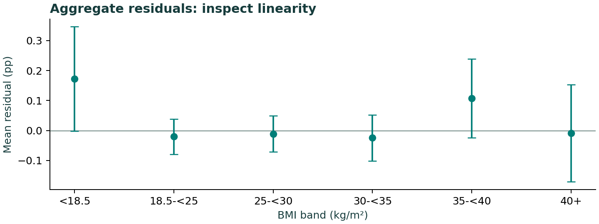

| metric | value |
|---|---|
| max_leverage | 0.013838 |
| leverage_over_2p_n | 641.000000 |
| weighted_residual_RMSE | 1.109191 |
The maximum leverage and residual pattern are descriptive checks. Real extremes remain in the primary model. See the prespecified quadratic model in model_results.csv; the quadratic linear coefficient alone is not a constant per-5-unit effect.